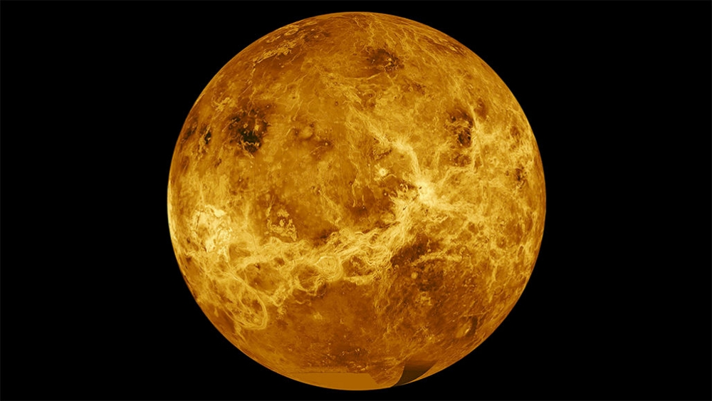

Venus
Venus adalah planet terdekat kedua dari Matahari setelah Merkurius. Planet ini mengorbit Matahari selama 224,7 hari Bumi. Venus tidak memiliki satelit alami dan dinamai dari dewi cinta dan kecantikan dalam mitologi Romawi. Setelah Bulan, planet ini merupakan objek alami tercerah di langit malam, dengan magnitudo tampak sebesar −4,6 yang cukup cerah untuk menghasilkan bayangan. Venus merupakan planet inferior dengan sudut elongasi yang mencapai 47,8°. Kecerahan maksimal planet ini dapat dilihat segera sebelum matahari terbit atau setelah matahari terbenam, sehingga disebut Bintang Fajar atau Bintang Senja. Venus adalah planet kebumian dan kadang-kadang disebut “planet saudara” Bumi karena ukuran, gravitasi, dan komposisi yang mirip (Venus merupakan planet terdekat dari Bumi dan planet yang ukurannya paling mendekati Bumi). Namun, dalam hal lain planet ini sangat berbeda dari Bumi. Planet ini memiliki atmosfer terpadat di antara empat planet kebumian yang terdiri dari 96% karbon dioksida. Tekanan atmosfer permukaan Venus 92 kali lebih besar daripada Bumi. Dengan rata-rata suhu permukaan sebesar 735 K (462 °C; 863 °F), Venus merupakan planet terpanas di Tata Surya. (wikipedia.com)